Sampling Distribution
Simulating Unicorns
Central Limit Theorem
Common Sampling Distributions
Sampling Distributions for Regression Models
Scientific Notation
Sampling Distribution is the idea that the statistics that you generate (slopes and intercepts) have their own data generation process.
In other words, the numerical values you obtain from the lm and glm function can be different if we got a different data set.
Some values will be more common than others. Because of this, they have their own data generating process, like the outcome of interest has it’s own data generating process.
Distribution of a statistic over repeated samples
Different Samples yield different statistics
The Standard Error (SE) is the standard deviation of a statistic itself.
SE tells us how much a statistic varies from sample to sample. Smaller SE = more precision.
\[ Y_i = \beta_0 + \beta_1 X_i + \varepsilon_i \]
\[ \varepsilon_i \sim DGP \]
The randomness effect is a sampling phenomenom where you will get different samples every time you sample a population.
Getting different samples means you will get different statistics.
These statistics will have a distribution on their own.
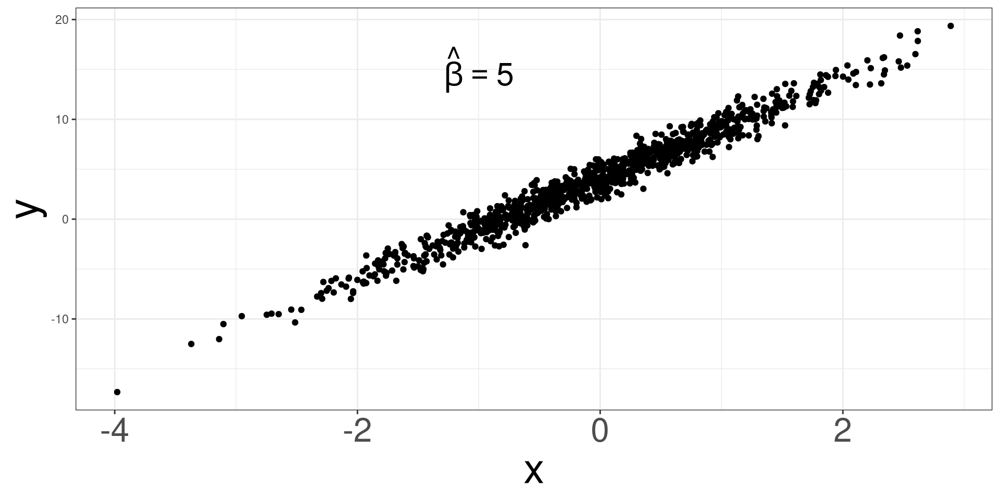
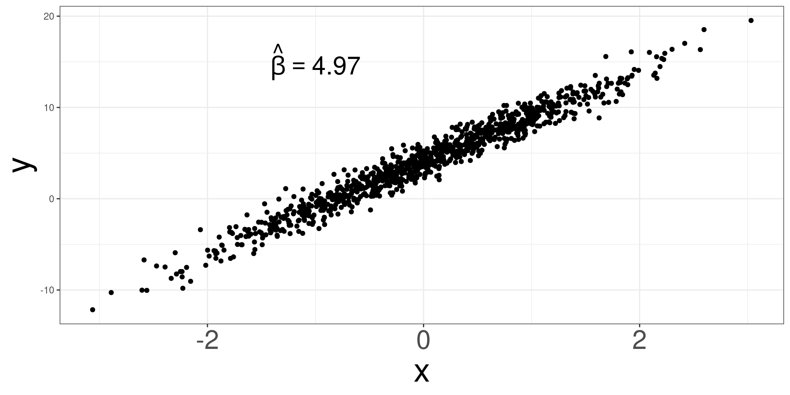
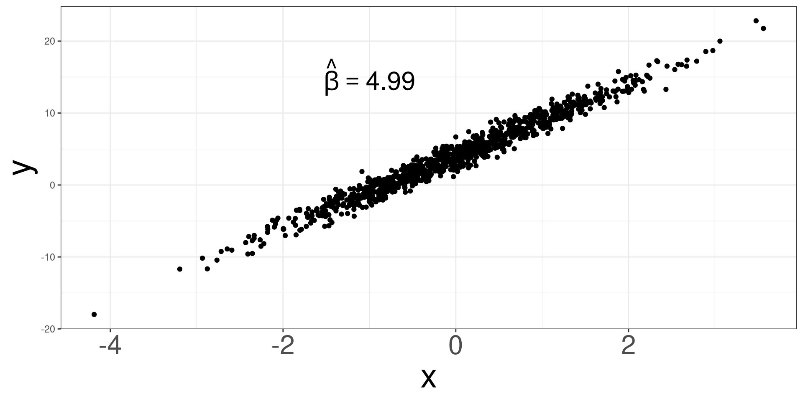
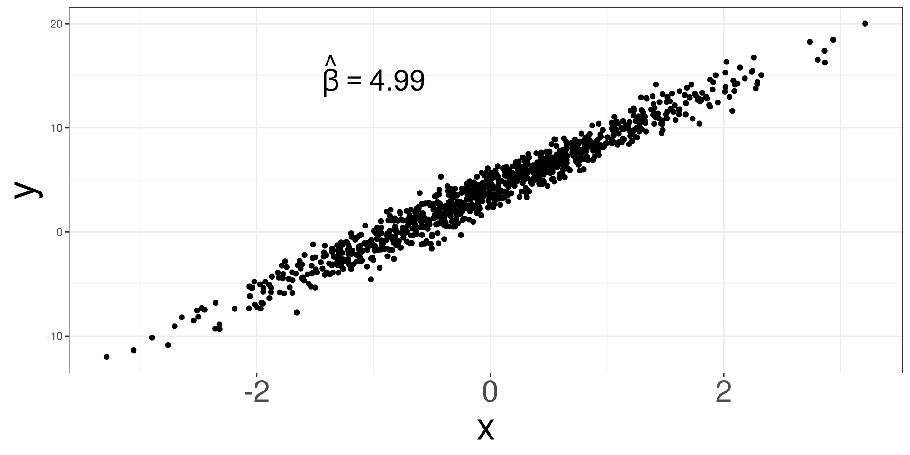
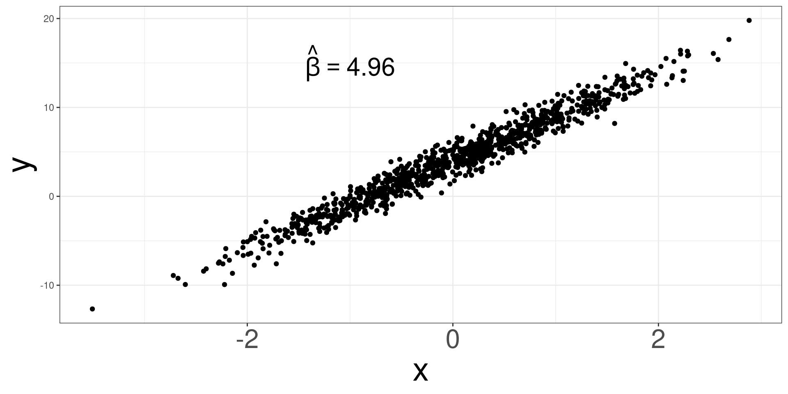
Sampling Distribution
Simulating Unicorns
Central Limit Theorem
Common Sampling Distributions
Sampling Distributions for Regression Models
Scientific Notation
To better understand the variation in statistics, let’s simulate a data set of unicorn characteristics to visualize and understand the variation.
We will simulate a data set using the unicorns function and only we need to specify how many unicorns you want to simulate.
#> Unicorn_ID Age Gender Color Type_of_Unicorn Type_of_Horn Horn_Length
#> 1 1 10 Non-binary Gray Ember Opal 5.287256
#> 2 2 11 Genderfluid Gray Ember Aquamarine 4.591308
#> 3 3 5 Female Pink Ember Opal 4.992701
#> 4 4 14 Male White Ember Opal 4.352872
#> 5 5 4 Male Black Ruvas Opal 4.796048
#> 6 6 9 Non-binary White Ember Aquamarine 4.598019
#> 7 7 14 Male Gray Ruvas Aquamarine 4.549760
#> 8 8 11 Agender Brown Ember Aquamarine 4.973695
#> 9 9 20 Agender Gold Jewel Opal 4.864004
#> 10 10 10 Agender Gold Jewel Opal 5.079095
#> Horn_Strength Weight Health_Score Personality_Score Magical_Score
#> 1 24.70889 137.6102 6 2.006764214 11015.19
#> 2 29.11632 134.6205 2 2.124926856 10995.41
#> 3 27.68589 108.5017 2 4.934695058 10853.76
#> 4 25.88500 142.4263 8 0.300370842 11115.87
#> 5 29.46725 126.5744 1 0.383786512 10817.42
#> 6 29.17967 127.9718 2 0.598821190 10941.86
#> 7 27.53249 129.6387 1 0.602664941 11084.51
#> 8 29.98466 123.6671 10 2.296081966 10999.39
#> 9 29.49899 137.9716 3 2.263051942 11301.22
#> 10 28.99222 138.5688 4 0.007638889 11029.60
#> Elusiveness_Score Gentleness_Score Nature_Score
#> 1 40.51515 47.250604 948.9408
#> 2 36.25579 28.660853 946.0287
#> 3 35.91272 8.321457 929.1256
#> 4 36.80199 47.155697 961.3189
#> 5 36.16043 51.567881 924.2066
#> 6 37.81521 3.954338 939.3261
#> 7 35.94361 60.522925 957.9162
#> 8 33.01639 28.066502 946.7330
#> 9 38.16212 38.906987 984.1605
#> 10 37.94923 -35.147940 951.2351#> [1] "Unicorn_ID" "Age" "Gender"
#> [4] "Color" "Type_of_Unicorn" "Type_of_Horn"
#> [7] "Horn_Length" "Horn_Strength" "Weight"
#> [10] "Health_Score" "Personality_Score" "Magical_Score"
#> [13] "Elusiveness_Score" "Gentleness_Score" "Nature_Score"We will only look at Magical_Score and Nature_Score.
\[ Magical = 3423 + 8 \times Nature + \varepsilon \]
\[ \varepsilon \sim N(0, 3.24) \]
#> Nature_Score Magical_Score
#> 1 935.8889 10905.84
#> 2 946.3246 10991.69
#> 3 948.3476 11010.05
#> 4 916.1127 10754.62
#> 5 921.3345 10795.69
#> 6 976.0663 11235.21
#> 7 925.0308 10821.14
#> 8 972.5116 11201.34
#> 9 918.7336 10774.94
#> 10 923.0343 10808.61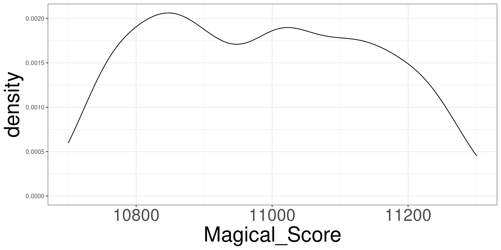
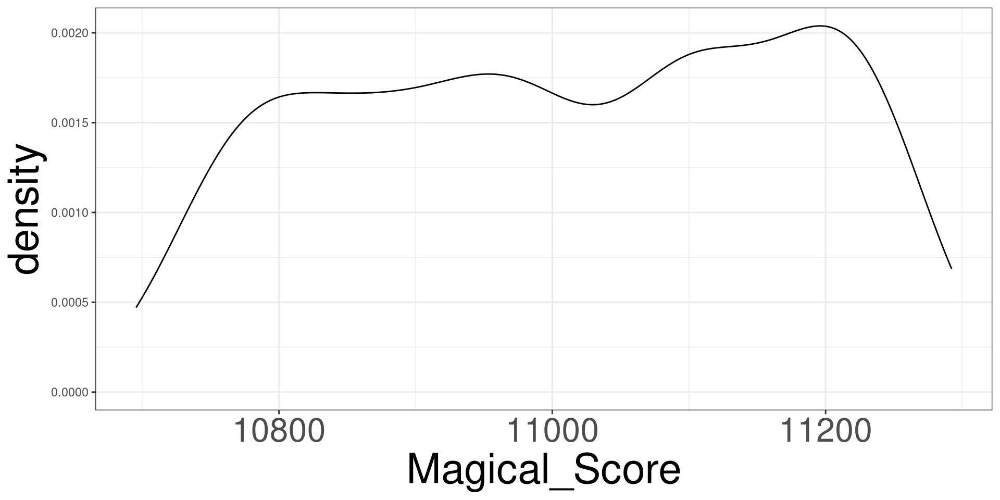
lmN: number of times to repeat a processCODE: what is to repeatedMODEL: a model that can be used to extract componentsINDEX: which component do you want to use
0: Intercept1: first slope2: second slope...#> [1] 7.999619 8.000680 7.999984 8.000473 7.996822 7.999667 7.998476 7.994427
#> [9] 8.000400 8.000180 7.991096 8.004663 8.001771 7.998010 8.007847 8.002143
#> [17] 7.997576 7.994148 8.000453 8.004216 8.003382 7.994335 8.000053 8.001225
#> [25] 8.001973 8.000425 8.002658 7.998898 7.993388 7.997078 8.003194 7.996693
#> [33] 8.001047 8.000292 8.000701 8.000692 8.001471 8.007882 7.999853 8.007126
#> [41] 7.998198 7.998157 7.999286 8.001666 7.991880 8.008768 8.003644 7.996041
#> [49] 8.003819 8.000639 8.010199 7.997813 7.995902 8.001633 7.995954 8.011122
#> [57] 8.004849 7.998737 8.000236 7.998949 8.003761 8.000641 7.995459 7.997921
#> [65] 8.006852 8.004086 7.999889 7.994307 7.996645 8.000272 8.004563 8.000832
#> [73] 8.000942 8.003790 7.997582 7.995920 8.002142 8.009524 8.001072 8.006828
#> [81] 8.000754 8.003015 8.005692 8.002430 7.996678 8.001948 7.995377 7.998517
#> [89] 8.001960 7.994606 7.997573 7.999630 7.994502 8.004347 8.000093 8.000902
#> [97] 8.001473 8.004295 7.995805 7.996390 8.003355 8.006944 8.005782 7.996836
#> [105] 7.996817 8.004010 8.000917 8.002014 7.995494 7.998875 7.999354 8.002084
#> [113] 7.998059 7.997758 8.002323 7.994843 8.000777 8.000376 8.000333 8.002607
#> [121] 7.992622 7.995307 7.998806 8.004113 8.003079 8.005933 7.994439 8.006453
#> [129] 7.997890 7.998079 8.000368 7.999780 7.998467 7.995373 8.004179 8.000057
#> [137] 7.996682 8.004784 8.007202 7.999830 7.991969 8.005706 7.994626 8.003470
#> [145] 7.998690 8.001567 7.998459 7.992117 7.995324 8.003352 7.997655 7.995583
#> [153] 8.000042 8.005602 7.998236 7.999429 8.001406 7.995328 7.998828 7.996300
#> [161] 7.996454 8.000910 7.998855 8.004106 7.993631 7.999822 7.996839 7.997085
#> [169] 7.998157 7.999299 8.002709 8.009256 7.998106 7.999926 8.003312 7.993677
#> [177] 8.007756 8.000571 7.991552 7.999053 8.011111 7.998970 7.998295 8.005105
#> [185] 8.003479 7.987926 7.997472 8.003786 8.006721 7.997218 7.999919 7.998764
#> [193] 8.002586 7.997666 7.997549 7.991979 8.001828 7.999028 8.003489 8.002961
#> [201] 8.003455 7.999974 8.000590 7.999991 8.002332 7.999253 8.005414 7.999262
#> [209] 7.999060 7.998186 8.002973 7.998032 8.002347 7.998331 8.003746 8.002150
#> [217] 7.997281 8.003095 8.006593 7.996821 8.004268 7.998569 8.001343 8.007627
#> [225] 7.999059 8.002810 8.002830 8.002333 8.001407 8.001689 8.001929 8.002401
#> [233] 7.997709 8.002335 7.998244 7.996477 8.002823 8.007264 8.000086 8.002528
#> [241] 8.002190 7.998752 8.000416 8.002722 8.000137 8.003034 8.000265 7.993565
#> [249] 7.993509 7.998744 8.003030 8.004175 8.003938 7.995707 7.996536 8.008121
#> [257] 8.002117 7.998014 8.000087 7.998504 8.003664 8.007215 8.001811 7.999076
#> [265] 7.997219 8.008335 8.005202 8.006071 8.007045 7.996539 7.999589 8.005860
#> [273] 8.004520 8.002544 8.005402 8.002325 7.995447 7.995449 8.007764 8.002900
#> [281] 7.998703 8.001631 8.001210 7.998960 8.002063 7.994816 8.005033 8.002504
#> [289] 8.005941 7.997182 7.997032 7.996257 8.005914 8.006604 7.995844 7.998264
#> [297] 7.997588 7.996562 8.000694 7.992607 7.996916 7.999821 7.999886 8.004195
#> [305] 7.995693 7.998228 8.005293 8.001849 8.005256 7.993044 7.996469 7.997849
#> [313] 8.003826 7.999781 7.997511 7.988201 7.998125 7.995286 7.993599 7.994483
#> [321] 7.999938 7.992511 8.001424 7.993820 7.996861 7.999384 7.996897 8.000544
#> [329] 8.004206 8.002703 7.997575 7.998379 8.005910 8.003614 7.990586 8.006251
#> [337] 7.998510 7.998536 7.995361 8.002728 7.993481 7.993334 8.000619 7.998357
#> [345] 8.001394 7.993716 7.993536 8.003578 8.005082 8.005295 7.996715 8.002463
#> [353] 7.998357 8.001986 7.992651 7.999159 8.007906 7.996685 7.998788 7.993418
#> [361] 7.996608 7.997227 8.001205 8.001192 8.004436 8.000132 7.997705 8.000425
#> [369] 8.001609 8.003462 7.999391 8.004268 7.997222 7.995462 7.991051 7.999655
#> [377] 7.998679 7.994854 7.998218 8.001213 8.001355 8.002226 7.999865 8.000776
#> [385] 7.999012 7.998432 8.005857 8.003251 7.999263 8.001103 7.995261 8.003481
#> [393] 8.005188 8.001533 7.998749 8.002101 7.995054 8.003136 8.002512 7.994560
#> [401] 7.995807 7.995372 7.997513 7.998702 8.002982 7.995366 8.003508 7.999357
#> [409] 7.998794 7.998377 7.996880 8.005995 7.997436 8.001780 8.003903 8.002840
#> [417] 8.002888 7.997339 8.001697 7.988533 7.997126 7.995107 7.996504 7.992989
#> [425] 7.999529 7.994747 7.991229 7.999840 8.000415 8.007028 7.998598 8.001718
#> [433] 8.004791 8.007827 8.001316 8.000870 8.008688 8.003047 8.000773 7.996666
#> [441] 8.000331 7.995302 7.999705 8.002584 8.001179 7.994076 7.995395 7.998311
#> [449] 7.993033 8.002681 8.005350 7.995099 7.997315 8.003288 7.997032 7.992718
#> [457] 7.993538 8.002497 7.998935 7.999642 7.997054 7.997187 8.003429 7.999305
#> [465] 7.998541 8.003920 8.001085 7.997146 8.002651 7.994471 7.996551 8.001507
#> [473] 7.995907 8.005582 7.992678 8.001360 7.999244 7.998279 8.003482 7.997921
#> [481] 7.994571 7.998326 7.996747 7.994873 8.011120 8.004748 8.000802 7.996510
#> [489] 8.004941 7.998094 8.000777 8.005853 7.996064 7.989891 7.997768 8.000112
#> [497] 8.002993 8.008579 7.999657 8.007115 8.006369 8.000290 7.996869 8.004906
#> [505] 7.998172 8.010007 8.007165 7.989357 8.006293 8.003274 7.990845 7.996498
#> [513] 8.004620 8.002109 8.002416 7.998333 7.998507 8.001153 8.006682 7.998084
#> [521] 8.002828 7.997635 7.997115 8.000568 8.005599 8.000698 8.006763 7.999522
#> [529] 8.001499 7.993632 8.004131 7.996480 8.007491 8.001195 8.000447 7.997227
#> [537] 8.000987 7.996412 7.999687 7.993989 8.000841 8.007626 7.997970 7.998870
#> [545] 8.002310 7.996737 7.994059 8.001197 8.002299 8.002330 8.007204 8.002636
#> [553] 7.994555 7.996805 7.999139 8.003317 8.002507 7.995336 8.000961 8.001937
#> [561] 7.995271 7.998278 7.996624 7.996960 8.000106 7.998788 8.003911 7.998335
#> [569] 8.006035 8.000879 8.002948 8.000677 7.990234 8.006766 8.010774 8.005090
#> [577] 7.999652 7.994030 7.999410 8.006888 8.000949 8.000035 7.995982 8.000322
#> [585] 7.999938 8.002528 7.995494 8.005331 8.002157 8.004272 8.003083 8.008840
#> [593] 7.998923 8.003014 8.000706 7.999009 7.997200 7.997876 7.997485 8.004241
#> [601] 7.996730 8.005209 8.000935 8.004874 8.002648 8.002130 8.002340 7.994044
#> [609] 8.002009 7.995816 7.998318 7.998445 8.001880 7.999366 8.002854 8.003744
#> [617] 8.000313 8.003092 8.001229 7.992958 8.003976 7.995767 7.999384 8.000837
#> [625] 8.000174 8.003985 8.000622 8.000634 7.994642 7.996744 7.995073 7.995932
#> [633] 7.993150 7.999636 8.000047 8.009067 8.005276 8.000911 7.992700 7.997768
#> [641] 7.998856 7.999329 8.008431 7.997752 7.999970 8.005375 8.003669 7.998744
#> [649] 8.004052 7.996874 7.998751 8.005357 7.990729 7.996819 8.000867 8.005014
#> [657] 7.997295 8.002054 7.997995 7.995154 7.998040 8.002961 8.008791 7.996920
#> [665] 8.005368 8.002936 7.997955 7.996127 8.003900 8.004406 7.998640 8.001400
#> [673] 7.997279 8.001245 7.999572 7.993229 7.997782 7.998208 7.992855 7.997820
#> [681] 8.001538 8.003991 7.996852 8.004998 8.005100 7.999108 8.010044 8.005944
#> [689] 7.999496 7.995893 7.997900 8.004777 8.004954 8.002988 8.006535 7.994029
#> [697] 7.995976 7.999339 7.998131 8.001967 7.999537 8.009499 8.000084 7.997669
#> [705] 7.999170 8.000081 8.002934 8.008022 8.002419 7.995815 7.996280 8.001102
#> [713] 7.999217 8.012241 8.005100 8.008839 8.005161 8.001493 8.004494 7.999804
#> [721] 8.005644 8.003844 8.008275 7.995872 7.997012 7.997363 7.996687 8.002608
#> [729] 7.995762 7.998837 8.000661 8.000231 7.994237 7.998686 8.002868 7.995026
#> [737] 7.998934 7.997725 8.002517 7.993810 8.001332 7.999005 8.008677 7.993150
#> [745] 8.002854 7.995836 7.995853 7.996398 8.002133 8.000090 7.997974 7.999936
#> [753] 8.000668 8.001790 8.005438 7.999452 8.001599 7.992016 8.006527 7.993558
#> [761] 8.003888 8.003225 8.001702 7.999744 7.998187 8.004378 7.995874 8.001205
#> [769] 7.994486 7.999730 7.998112 8.002247 7.994625 8.004080 7.997587 7.996924
#> [777] 8.000029 7.999239 7.998319 7.999893 8.000885 7.999762 8.002675 7.998691
#> [785] 7.999513 7.995506 7.996115 8.001306 8.004876 8.000892 8.001169 8.002285
#> [793] 7.997692 7.992656 8.002263 7.992757 7.994324 8.003326 8.002751 7.995222
#> [801] 8.004239 7.999157 8.004147 7.999743 7.997908 7.995517 7.999018 7.999859
#> [809] 7.996671 7.998522 7.995266 8.000645 7.994868 8.003511 8.000823 7.999301
#> [817] 7.996736 8.001545 7.996168 8.002118 7.995557 8.003081 8.003502 8.002224
#> [825] 7.998246 7.998000 8.005204 7.997737 8.001626 8.000807 8.000998 7.994046
#> [833] 8.001461 8.002668 7.998048 7.997664 7.997957 8.002652 7.999508 7.995026
#> [841] 8.015261 8.002627 7.999462 7.997329 8.002419 8.001232 8.004855 7.993272
#> [849] 7.994316 8.001439 7.994818 8.003476 7.998386 8.001803 7.997693 7.996715
#> [857] 7.999228 8.000750 7.999004 7.991408 8.002875 8.004673 8.006064 8.005518
#> [865] 7.997876 8.005514 7.993783 7.992365 8.000083 7.996425 8.003457 8.000626
#> [873] 7.993767 8.002650 8.002397 8.000181 8.009504 7.997393 8.008419 7.999326
#> [881] 7.997805 7.998424 7.997352 8.000634 8.005948 8.001557 8.002428 7.997441
#> [889] 8.001458 7.993835 8.003225 8.002995 7.993931 8.003769 7.995695 8.006247
#> [897] 7.993302 8.004054 8.005476 8.000710 8.005938 8.002549 7.994670 7.998287
#> [905] 7.999881 7.999920 7.992778 7.997061 8.005836 7.999015 7.992395 8.004838
#> [913] 7.997372 7.999597 7.998328 7.996903 8.001375 8.000688 7.997355 7.995171
#> [921] 8.007068 8.002335 7.997872 7.998228 7.996271 8.003083 7.999884 7.994865
#> [929] 7.991122 7.994631 8.003398 7.995791 7.998277 7.996653 7.993088 8.003222
#> [937] 7.997416 7.997366 7.995508 8.002158 7.998012 7.995967 7.998326 7.998788
#> [945] 8.000020 7.995044 7.993879 7.999909 7.996644 7.999959 7.989896 8.010432
#> [953] 8.006583 7.997936 7.999628 7.997380 8.004261 8.003658 8.003810 7.995193
#> [961] 8.005967 8.000446 8.005681 8.003800 7.998314 8.001728 8.002072 7.991659
#> [969] 7.994770 7.999368 7.998948 8.001004 7.997555 7.997768 7.996578 7.996375
#> [977] 8.000826 8.000687 7.998411 7.995293 7.993430 7.994025 8.004009 8.001455
#> [985] 8.003077 7.996453 7.995144 8.006561 7.996461 7.998491 8.005694 7.998466
#> [993] 7.996759 8.000251 7.997337 8.006188 8.001995 7.999805 7.992371 8.008856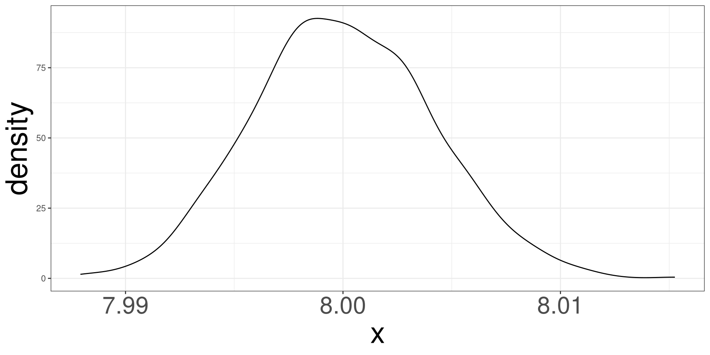
Sampling Distribution
Simulating Unicorns
Central Limit Theorem
Common Sampling Distributions
Sampling Distributions for Regression Models
Scientific Notation
The Central Limit Theorem (CLT) is a fundamental concept in probability and statistics. It states that the distribution of the sum (or average) of a large number of independent, identically distributed (i.i.d.) random variables will be approximately normal, regardless of the underlying distribution of those individual variables.
Simulating 500 samples of size 10 from a normal distribution with mean 5 and standard deviation of 2.
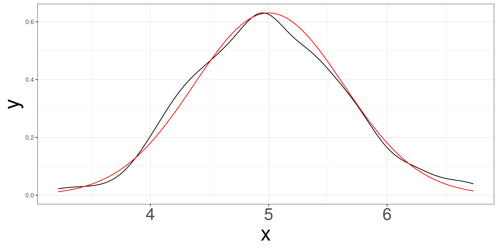
Simulating 500 samples of size 30 from a normal distribution with mean 5 and standard deviation of 2.
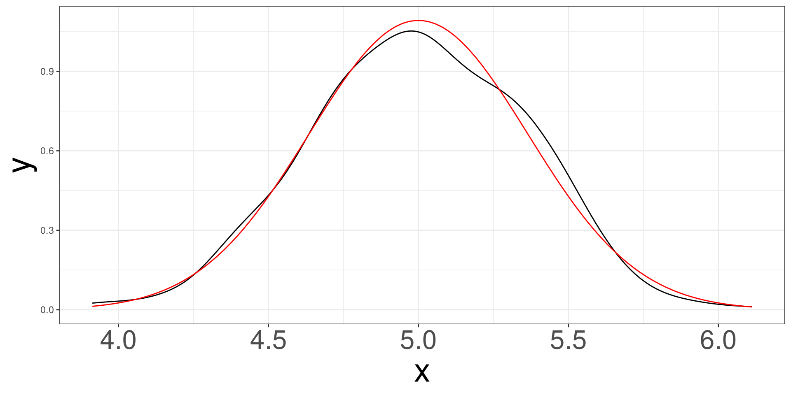
Simulating 500 samples of size 50 from a normal distribution with mean 5 and standard deviation of 2.
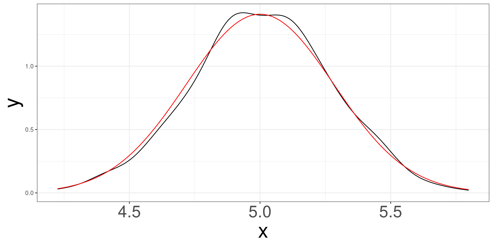
Simulating 500 samples of size 100 from a normal distribution with mean 5 and standard deviation of 2.
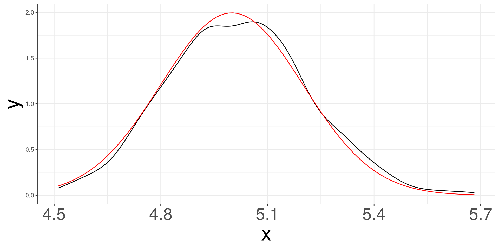
Sampling Distribution
Simulating Unicorns
Central Limit Theorem
Common Sampling Distributions
Sampling Distributions for Regression Models
Scientific Notation
When the data is said to have a normal distribution (DGP), there are special properties with both the mean and standard deviation, regardless of sample size.
Mean \[ \bar X = \sum ^n_{i=1} X_i \]
Standard Deviation \[ s^2 = \frac{1}{n}\sum ^n_{i=1} (X_i - \bar X)^2 \]
A data sample of size \(n\) is generated from: \[ X_i \sim N(\mu, \sigma) \]
\[ \bar X \sim N(\mu, \sigma/\sqrt{n}) \]
\[ Z = \frac{\bar X - \mu}{\sigma/\sqrt{n}} \sim N(0,1) \]
A data sample of size \(n\) is generated from: \[ X_i \sim N(\mu, \sigma) \]
\[ (n-1)s^2/\sigma^2 \sim \chi^2(n-1) \]
\[ Z = \frac{\bar X - \mu}{\sigma/\sqrt{n}} \rightarrow \frac{\bar X - \mu}{s/\sqrt{n}} \sim t(n-1) \]
Sampling Distribution
Simulating Unicorns
Central Limit Theorem
Common Sampling Distributions
Sampling Distributions for Regression Models
Scientific Notation
The estimates of regression coefficients (slopes) have a distribution!
Based on our outcome, we will have 2 different distributions to work with: Normal or t.
\[ \frac{\hat\beta_j-\beta_j}{\mathrm{se}(\hat\beta_j)} \sim t_{n-p^\prime} \]
\[ \frac{\hat\beta_j}{\mathrm{se}(\hat\beta_j)} \sim t_{n-p^\prime} \]
\[ \frac{\hat\beta_j - \beta_j}{\mathrm{se}(\hat\beta_j)} \sim N(0,1) \]
\[ \frac{\hat\beta_j}{\mathrm{se}(\hat\beta_j)} \sim N(0,1) \]
Sampling Distribution
Simulating Unicorns
Central Limit Theorem
Common Sampling Distributions
Sampling Distributions for Regression Models
Scientific Notation
We often work with very large or very small numbers.
Problems with standard form:
Scientific notation makes numbers compact and standardized.
A number is in scientific notation if:
\[ a \times 10^n \]
where:
Write 45,000 in scientific notation.
Move decimal:
\[ 45000 \rightarrow 4.5 \]
Moved 4 places left:
\[ 4.5 \times 10^4 \]
Write 0.00072 in scientific notation.
Move decimal:
\[ 0.00072 \rightarrow 7.2 \]
Moved 4 places right:
\[ 7.2 \times 10^{-4} \]
Positive exponents → big numbers
Example:
\[ 2.1 \times 10^6 = 2{,}100{,}000 \]
Negative exponents → small numbers
Example:
\[ 4.3 \times 10^{-3} = 0.0043 \]
Rule:
\[ 6.2 \times 10^5 \]
Move decimal 5 places right:
\[ 620{,}000 \]
\[ 9.1 \times 10^{-4} \]
Move decimal 4 places left:
\[ 0.00091 \]
Step 1: Compare exponents
Step 2: If exponents match, compare coefficients \(a\)
Example:
Since \(10^5 > 10^4\), the first number is larger.
R often displays very large/small numbers using e notation.
\[ a \times 10^n \quad \text{is shown as} \quad a\text{e}n \]
Examples:
3e+06 means \(3 \times 10^6\)4.5e-04 means \(4.5 \times 10^{-4}\)